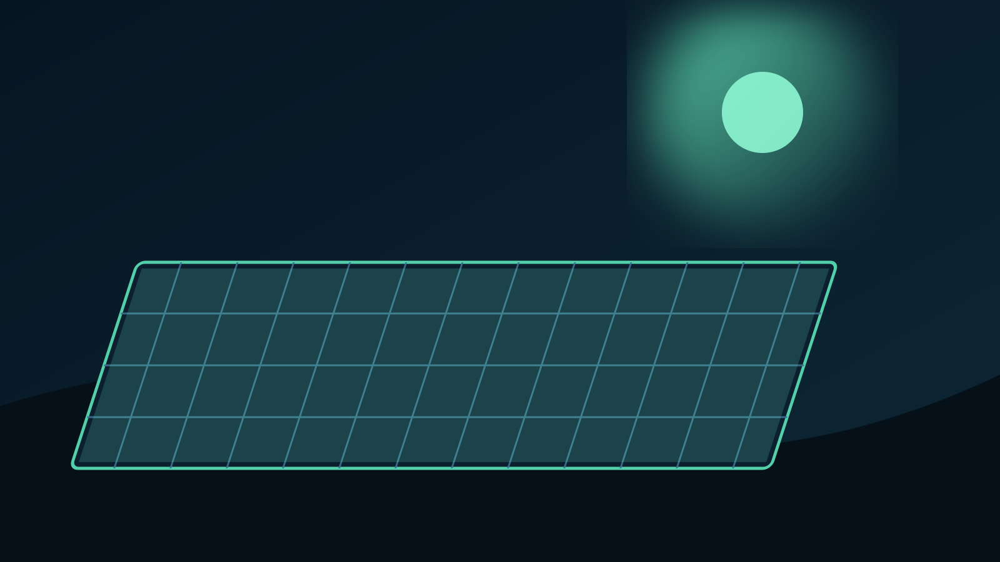

Professional Solar Maintenance
Cleaner panels.
More potential.
Professional solar panel cleaning for homes, commercial properties, estates and large-scale solar installations. Protect your investment and keep your system operating at its best.
0Panels cleaned
5★Client-rated service
4Service categories
What we do
Cleaning built for every scale.
From a single residential roof to major solar arrays, our team brings professional equipment, safe methods and practical experience to every job.



Why OSPCS
Professional care for your solar investment.
Dirt, dust and debris can build up on solar panels and reduce their ability to perform. OSPCS uses professional, non-abrasive cleaning methods designed to restore a clean panel surface without unnecessary wear.
✓
20,000+ panels cleaned
Experience across residential, commercial and industrial environments.
✓
Safety-focused team
Staff are trained and certified for work at heights.
✓
Flexible cleaning technology
Water-fed systems, high-pressure cleaning and robotic options for larger installations.
Selected work
Built around real sites.


Ready when you are
Let's get your panels looking their best.
Tell us about your site and panel count. We'll use the details to prepare your cleaning quote.
Start a Quote →